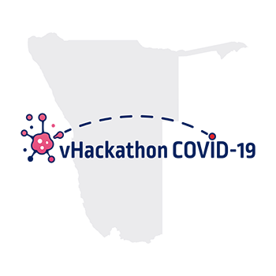

<section class="about-us-section">
<div id="link1">
    <mdb-card-body>
        <div class="img-container">
            
        </div>

        <div style="padding: 13px;">

           
             <h5>Namibia COVID-19 Virtual Hackathon</h5> 
            
            <mat-card style="margin-top:10px;">
                <mat-card-content>
                    <a style="font-size:20px">

                        A virtual hackathon kicked off on the 18th March 2020 in Namibia for a COVID 19 tech response.
                        <br>
                        Teams are developing the following Apps:
                        <ol>
                            <li>An essential info app for Namibia</li>
                            <li>Realtime data tracking</li>
                            <li>Virtual Learning</li>
                            <li>Self reporting</li>
                            <li>AI solution for health monitoring</li>
                            <li>Misinformation and sentiment analysis</li>
                        </ol>

                        Virtual Hackathon for Namibia’s COVID-19 Tech Response has morethan 80 local & international people
                        across projects
                        working around the clock with Min of Health/WHO/CDC.
                    </a>
                </mat-card-content>

            </mat-card>
        </div>
    </mdb-card-body>
</div>
</section>
